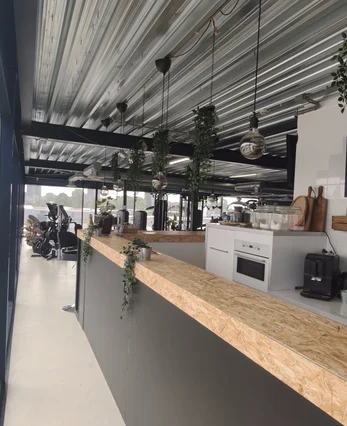

Een fitnessclub in Leiderdorp met de sfeer van een buurtclub en de uitrusting van een premium gym. Moderne apparatuur, een ruime kracht- en cardiozone, groepslessen en een lounge — met 24/7 toegang en coaches die je kennen. Klein genoeg om persoonlijk te zijn, compleet genoeg voor elk doel.
Fit Up is meer dan een rij toestellen. Een club met sfeer, voor wie zich ergens thuis wil voelen tijdens het sporten.
De bekende bezwaren tegen lidmaatschap — en hoe Fit Up Leiderdorp het anders aanpakt.
Van eerste kennismaking tot je vaste plek in de club — laagdrempelig en op jouw tempo.
Fit Up Leiderdorp is dé lokale fitnessclub aan de Weversbaan 9, vlak bij Winkelhof. Goed bereikbaar vanuit Leiderdorp, Leiden, Oegstgeest en Voorschoten — met gratis parkeren voor de deur.

Plan een gratis intake, loop binnen en proef de sfeer. We laten je de club zien en bespreken vrijblijvend wat bij je past.